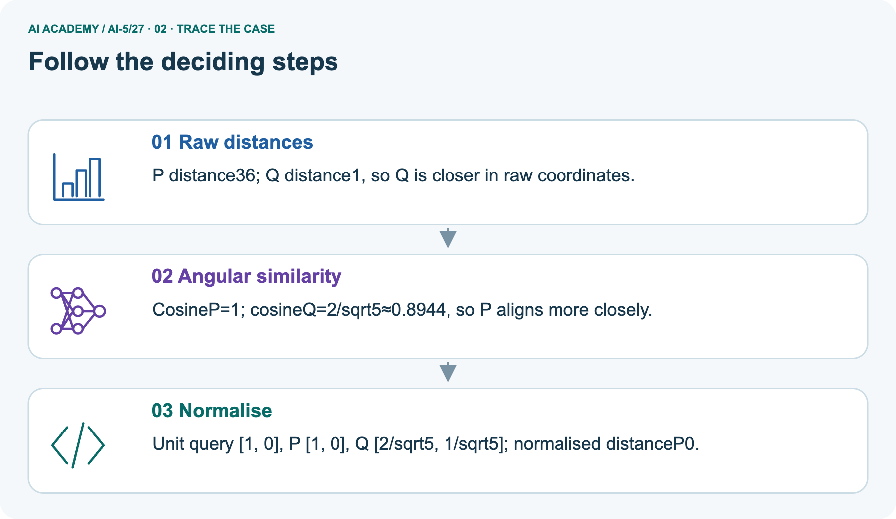
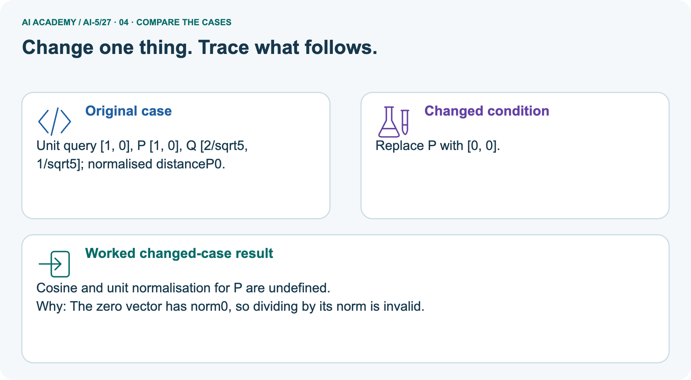
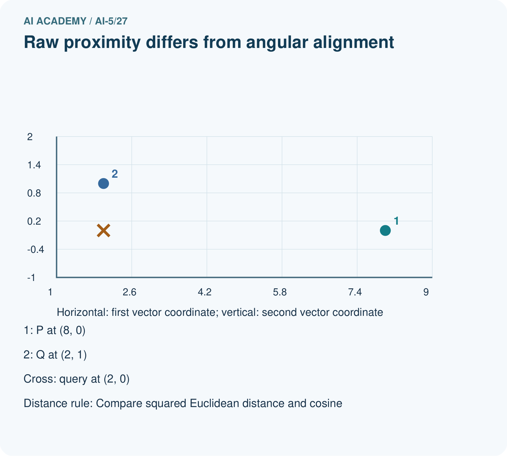
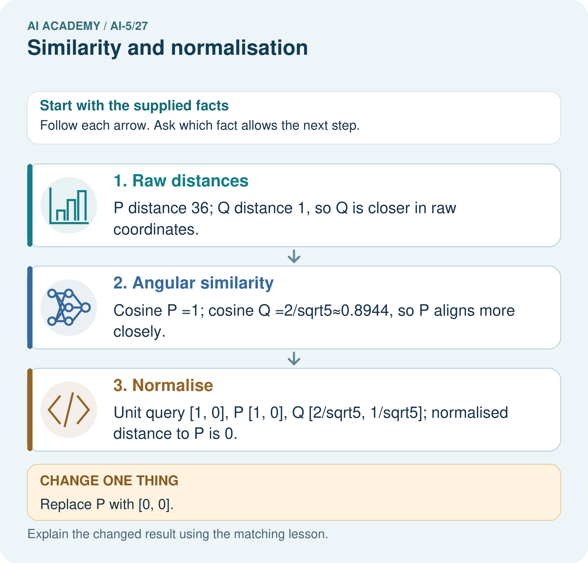
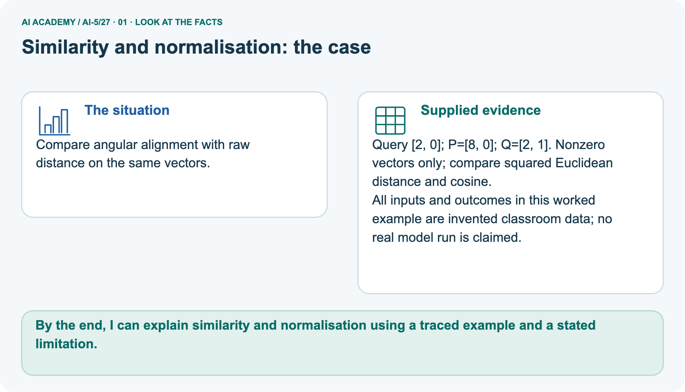
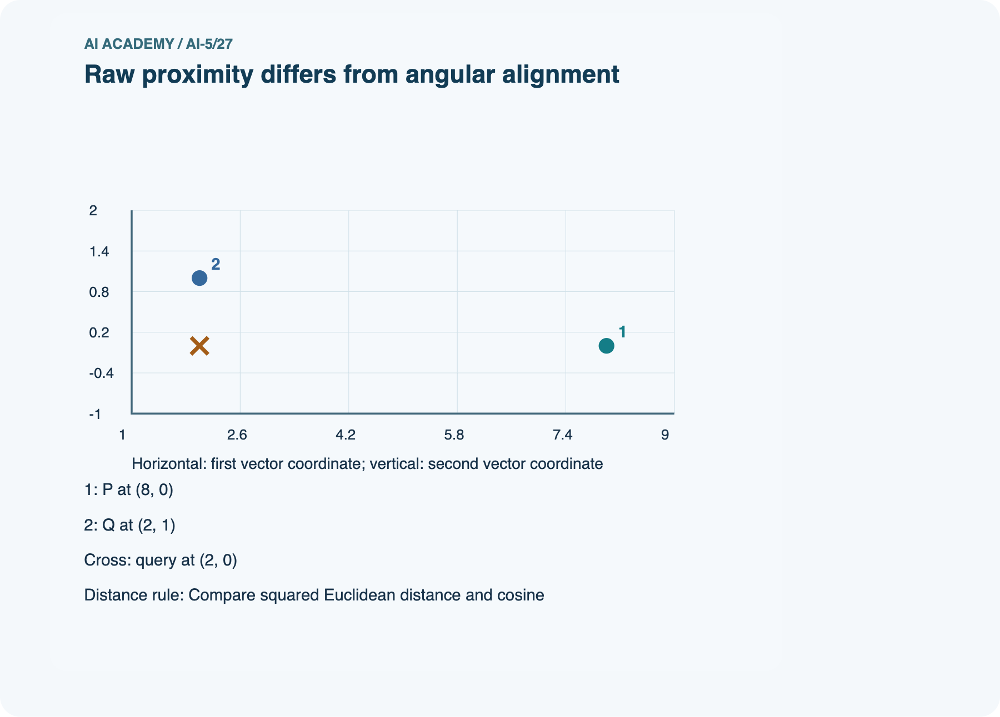
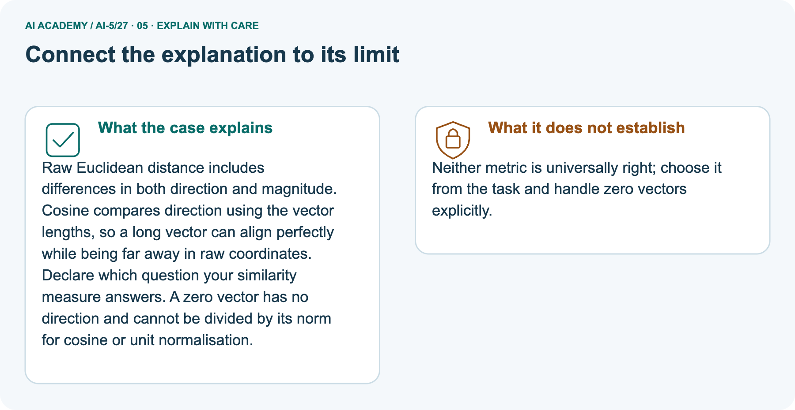

AI Academy · Level 5 · Grade 10 · Week 27 · Student lesson
Similarity and normalisation
Learn to understand, design, build, test and explain AI systems responsibly.
Project: Image-pattern Network Investigation
THE CONNECTED WEEK
Keep the length or choose the direction. Normalize both sides. Handle zero explicitly.
Compare complete geometric rankings while documenting lost magnitude and unavailable cosine values.
Keep one habit: Original vector table → side-by-side geometry → squared-unit identity → pictured zero case → complete ranking policy → independent new vectors.
Main lesson · Section 1
Do we want nearby coordinates or aligned directions?
Keep normalization,zero handling and the comparison question explicit.
Learning goals
I can calculate vector length and normalise a nonzero vector.
I can compare squared distance with cosine similarity and explain a changed ranking.
I can handle zero vectors explicitly and justify what information a comparison keeps.
Retrieve candidate-dependent geometry
Close your notes first. A rough first answer helps us choose the right starting point; it is not a score for your ability.
Without opening the old lesson, explain one key idea from Embeddings and neighbourhoods. Give an example and a mistake that the idea helps you avoid.
Without opening the old lesson, explain one key idea from Augmentation and leakage. Give an example and a mistake that the idea helps you avoid.
Without opening the old lesson, explain one key idea from Convolution as a local operation. Give an example and a mistake that the idea helps you avoid.
After trying, check the relevant lesson or ask your teacher. Change the part of your explanation that the evidence shows was wrong.
Prerequisite and starting response
For query [3, 4] and candidate [3, 0], calculate squared Euclidean distance. Does a smaller distance prove equivalent meaning?
End goal
By the end, I can explain similarity and normalisation using a traced example and a stated limitation.
Earlier wording, alternatives and picture transcripts
Your learning target
Remember before reading
This week you will practise:
Calculate vector length and normalise a nonzero vector
Compare squared distance with cosine similarity and explain a changed ranking
Handle zero vectors explicitly and justify what information a comparison keeps
Retrieve what you already know
This week’s end goal
Main lesson · Section 2
Read both vector direction and length before choosing a rule
The same positive proportions can occur at different magnitudes.
Complete comparison question and supplied vectors
Last week, a neighbourhood depended on a chosen distance rule. This week, compare the same fictional vectors in two ways. Squared distance rewards nearby coordinates.
Cosine similarity compares direction and ignores positive changes in length. Neither rule is automatically right for every task.
| Vector | Coordinates | Length |
|---|---|---|
| Query Q | [3, 4] | 5 |
| Candidate A | [6, 8] | 10 |
| Candidate B | [3, 0] | 3 |
| Candidate C | [-3, -4] | 5 |
Derive Q and A unit vectors
For Q, length = square root of (3 squared + 4 squared) = square root of 25 = 5. Divide both components by 5 to get its unit vector [0.6, 0.8]. Its length is one because 0.6 squared + 0.8 squared = 1.
A becomes the same unit vector. C becomes [-0.6, -0.8], pointing in the opposite direction.
Keep the constructed coordinates and removed length in scope
These supplied coordinates are for arithmetic practice. They are not learned language embeddings. Normalising each row keeps its direction but removes its original length unless that length is saved separately.
Name given and missing facts
Main lesson · Section 3
Compute complete rankings rather than judging arrow length alone
The rule determines which differences the comparison keeps.
Complete dot-product and cosine derivation
Multiply matching components and add to obtain the dot product. Cosine similarity equals dot(Q, candidate) divided by (length(Q) times length(candidate)). Higher cosine means a closer direction.
For A, the dot product is 3 times 6 + 4 times 8 = 50, so cosine = 50 / (5 times 10) = 1. For B it is 9 / 15 = 0.6; for C it is -25 / 25 = -1.
All original raw and unit comparisons
| Main query Q[3, 4], length 5 | Candidate length | Raw squared distance | Cosine:larger wins | Unit-vector squared distance:smaller wins |
|---|---|---|---|---|
| A[6, 8] | 10 | 25 | 1 | 0 |
| B[3, 0] | 3 | 16 | 0.6 | 0.8 |
| C[-3, -4] | 5 | 100 | -1 | 4 |
| Winner among original A/B/C | Different criterion | B | A | A |
Labelled original-versus-normalized geometry

Identity,precision and numeric input assumptions
Cosine divides a dot product by both nonzero lengths. Compare all original A/B/C candidates under the same rule before ranking. Unit-vector squared distance is2−2 cosine, so it ranks the same way as largest cosine when both sides have unit length. Keep full precision for decisions and round only display values. The code assumes finite moderate numeric inputs and rejects empty, mismatched or zero vectors.
A cosine in[−1, 1]is a mathematical comparison, not a calibrated probability or evidence that records mean the same thing.
Trace before running: A gives 1, B gives 0.6 and C gives -1. This classroom code assumes finite, moderate numeric inputs. It rejects empty, unequal-length and zero vectors.
Keep full precision for decisions; rounding here is only for display. Cosine lies between -1 and 1 in exact arithmetic and is not a probability.
Complete runnable nonzero cosine calculation
from math import sqrt
def unit(v):
if not v:
raise ValueError("Need a nonempty vector")
length = sqrt(sum(x*x for x in v))
if length == 0:
raise ValueError("Zero vector has no direction")
return [x / length for x in v]
def cosine(a, b):
if len(a) != len(b):
raise ValueError("Need matching dimensions")
ua, ub = unit(a), unit(b)
return sum(x*y for x, y in zip(ua, ub))
q = [3, 4]
for name, v in [("A", [6, 8]), ("B", [3, 0]),
("C", [-3, -4])]:
print(name, round(cosine(q, v), 6))Connect each arrow to its coordinate and norm
Point to the input, the deciding step and the result in this week’s visual. Explain the same step in ordinary words. A picture helps when you can say what each part represents.
Earlier wording, alternatives and picture transcripts
Connect the picture and the explanation
Main lesson · Section 4
Change the comparison while keeping the vectors fixed
A changed winner can follow from a changed mathematical question.
Current full-ranking task
For query Q, write the raw squared distances and cosines to A, B and C from the lesson. Name the winner under each rule. Calculate squared distances after normalising both sides and check the relationship to cosine.
Predict the pictured zero replacement
Change: Replace P with [0, 0].
Check after predicting
Prediction: Cosine and unit normalisation for P are undefined.
Reason: The zero vector has norm 0, so dividing by its norm is invalid.
Earlier wording, alternatives and picture transcripts
Compare a familiar case with a changed case
Change one thing in the pictured case
Main lesson · Section 6
Separate raw closeness from angular alignment
Keep the pictured query and candidate names distinct from the main table.
Complete pictured vectors and separate scope
Compare angular alignment with raw distance on the same vectors.
Query [2, 0]; P=[8, 0]; Q=[2, 1]. Nonzero vectors only; compare squared Euclidean distance and cosine.
All inputs and outcomes in this worked example are invented classroom data; no real model run is claimed.
The picture uses query[2, 0], candidate P[8, 0]and a candidate named Q[2, 1]. Here Q is a candidate name, not the main query Q[3, 4]. Raw squared distances 36 and1 prefer candidate Q. Cosines1 and2/√5≈.8944 prefer P. Normalize both sides:the query and P become[1, 0]. Replacing P with[0, 0]makes its norm 0 and cosine undefined; it does not create a valid perpendicular cosine 0.
These toy rankings do not select a universally best metric.
Trace original distances,cosines and normalization



Read the picture one step at a time
Raw Euclidean distance includes differences in both direction and magnitude. Cosine compares direction using the vector lengths, so a long vector can align perfectly while being far away in raw coordinates.
Declare which question your similarity measure answers. A zero vector has no direction and cannot be divided by its norm for cosine or unit normalisation.
Predict replacing P with the zero vector
Change one thing: Replace P with [0, 0]. Predict the result before checking the explanation. What remains the same?
Check after predicting



Explain changed winners and zero policy
Neither metric is universally right; choose it from the task and handle zero vectors explicitly.
Read the labelled picture: Why do the original two metrics select different winners? Point to the relevant step in the picture, then write the changed result and the rule or evidence that supports it.
Return to the main unit-distance identity and candidate D
Compare the same candidates using two rules
After normalising both Q and every candidate, squared distances to A, B and C are 0, 0.8 and 4. For unit vectors, squared distance = 2 - 2 times cosine.
Thus the smallest normalised distance and largest cosine produce the same ranking, including ties, in exact arithmetic.
Earlier wording, alternatives and picture transcripts
Learn from the worked case
Cover the result before checking it. Say what is given, choose the procedure, and follow one step at a time. Then uncover the result and explain your first mismatch. Ask why a step is allowed, not only what number it produces.
A pictorial worked case: Similarity and normalisation
The facts we will use






Why this result follows
What this example does not establish
Main lesson · Section 7
Declare what normalization discards and how zero is handled
A real zero input can be meaningful even when this directional comparison is unavailable.
Complete magnitude,zero and scaling explanation
Suppose [3, 4] records counts of two event types, while [6, 8] records twice as many of each. Both have the same proportions and direction, but totals are 7 and 14. Normalisation makes their vectors identical.
That may suit a question about proportions, but it removes information needed to compare total activity. For learned embeddings, the usefulness of length must be tested for the task.
The zero vector [0, 0] has no direction, so its cosine is undefined. Do not silently assign zero similarity: zero cosine already means perpendicular nonzero vectors.
This lesson rejects a zero query and excludes zero candidates with an explicit report. If no valid candidates remain, return no comparison. PAD entries stay excluded by the mask; a real zero input needs its own policy.
Positive scaling preserves cosine: Q and 2 times Q have the same direction. Negative scaling reverses direction; Q and -Q have cosine -1.
Candidate labels, self-exclusion and a stated floating-point tie tolerance are still required when retrieving neighbours.
Every retained-information and zero-policy case
| Complete information/policy case | Meaning and declared response |
|---|---|
| Counts[3, 4]versus[6, 8] | Totals7 and14 but same unit vector[.6, .8]; length normalization loses total magnitude |
| Keep unit vector plus its original norm | Can reconstruct the exact original vector in exact arithmetic; this does not prove a better model |
| Zero candidate Z[0, 0]with query[3, 4] | Raw squared distance 25is defined; cosine is undefined. Exclude/report Z under this lesson’s cosine policy. |
| Only zero candidates remain | Return no comparison, not an invented similarity or winner |
| Zero query | Reject cosine comparison; use a separately declared fallback or review policy |
| Perpendicular nonzero vector[-4, 3] | Cosine0is valid; do not confuse it with undefined zero-vector cosine |
| Positive versus negative scaling | Cos(Q, 2Q)=1; cos(Q, −Q)=−1 |
| Per-vector L2 normalization versus fitted feature scaling | This norm uses one vector only; dataset-derived means/scales are different and must use training statistics |
Try the Z/Bcandidate set and zero query
A candidate set contains Z [0, 0] and B [3, 0]. With nonzero query Q, what happens under this lesson’s zero-vector policy? What if Q is zero, or Z is the only candidate?
Explain why replacing an undefined cosine with zero is misleading.
Earlier wording, alternatives and picture transcripts
Locate the earliest unsupported step
Main lesson · Section 8
Practise both rankings with less help
Name the candidate set,metric and normalization before choosing a winner.
Current task and response
For Q [3, 4], A [6, 8] and C [-3, -4], give each length and unit vector. Explain one distinction that normalisation removes and one that it preserves.
Supported W2 record
Use workbook W2 for the connected example “Similarity and normalisation”. First fill the input and rule boxes. Try the middle steps before asking for a hint. After a hint, try the next step yourself.
| Plan | Do | Check |
|---|---|---|
| What is given? Which rule or procedure applies? | Record each intermediate step. | Does the result follow? What remains unknown? |
Explain your trace to a partner. Your partner points to one step to check. Swap roles on the next case. Each person writes their own explanation.
Individual misconception check
Use the worked case for Similarity and normalisation. Proposed explanation: “Cosine is a probability”. Decide whether this explanation is supported.
Point to the step or supplied fact that decides; explain your repair if needed.
Answer on your own before discussion. If you are unsure, say which step you need help with.
Pictured ranking-change reasoning
Why do the original two metrics select different winners? Point to the relevant step in the picture, then write the changed result and the rule or evidence that supports it.
Reserve the independent new vectors
This is supported practice. Keep the separately named independent case for an attempt before feedback.
Earlier wording, alternatives and picture transcripts
Practise with less help: Compare the rankings
Check your reasoning
Explain the picture
Main lesson · Section 9
Run a complete raw-versus-direction and zero-policy audit
Every vector,ranking rule,tolerance and unavailable comparison is explicit.
Current full-ranking task and original functions
For query Q, write the raw squared distances and cosines to A, B and C from the lesson. Name the winner under each rule. Calculate squared distances after normalising both sides and check the relationship to cosine.
from math import sqrt
def unit(v):
if not v:
raise ValueError("Need a nonempty vector")
length = sqrt(sum(x*x for x in v))
if length == 0:
raise ValueError("Zero vector has no direction")
return [x / length for x in v]
def cosine(a, b):
if len(a) != len(b):
raise ValueError("Need matching dimensions")
ua, ub = unit(a), unit(b)
return sum(x*y for x, y in zip(ua, ub))
q = [3, 4]
for name, v in [("A", [6, 8]), ("B", [3, 0]),
("C", [-3, -4])]:
print(name, round(cosine(q, v), 6))Complete runnable comparison and policy program
from math import sqrt
def unit(v):
if not v:
raise ValueError("Need a nonempty vector")
length = sqrt(sum(x*x for x in v))
if length == 0:
raise ValueError("Zero vector has no direction")
return [x / length for x in v]
def cosine(a, b):
if len(a) != len(b):
raise ValueError("Need matching dimensions")
ua, ub = unit(a), unit(b)
return sum(x*y for x, y in zip(ua, ub))
q = [3, 4]
for name, v in [("A", [6, 8]), ("B", [3, 0]),
("C", [-3, -4])]:
print(name, round(cosine(q, v), 6))
# Complete raw/unit comparison and explicit zero-candidate policy.
from math import isfinite
def distance2(a,b):
if not a or len(a)!=len(b):
raise ValueError('Need equal nonempty dimensions')
return sum((x-y)**2 for x,y in zip(a,b))
def cosine_rank(query,candidates,tolerance=1e-9):
unit(query) # Reject an empty or zero query, not an invented zero cosine.
if not isfinite(tolerance) or tolerance<0:
raise ValueError('Need nonnegative finite tie tolerance')
scores={};excluded=[]
for name,vector in candidates.items():
if not vector or len(vector)!=len(query):
raise ValueError('Candidate dimensions must match query')
if all(x==0 for x in vector):
excluded.append(name)
else:
scores[name]=cosine(query,vector)
if not scores:
return [],excluded,scores # Explicit no-comparison result.
best=max(scores.values())
return sorted(n for n,c in scores.items() if abs(c-best)<=tolerance),excluded,scores
candidates={'A':[6,8],'B':[3,0],'C':[-3,-4]}
print('query unit vector',unit(q))
for name,v in candidates.items():
c=cosine(q,v)
d=distance2(unit(q),unit(v))
print(name,'raw d2 / cosine / unit d2 / 2-2cos',
round(distance2(q,v),6),round(c,6),round(d,6),round(2-2*c,6))
print('raw winner',min(candidates,key=lambda n:distance2(q,candidates[n])))
print('cosine winners',cosine_rank(q,candidates)[0])
print('zero candidate report',cosine_rank(q,{'Z':[0,0],'B':[3,0]}))
print('only zero candidate: no comparison',cosine_rank(q,{'Z':[0,0]}))
print('perpendicular nonzero cosine',round(cosine(q,[-4,3]),6))
print('positive/negative scaling cosines',round(cosine(q,[6,8]),6),round(cosine(q,[-3,-4]),6))
print('same unit vector, different totals',sum(q),sum(candidates['A']))
# Caller supplies finite moderate components and the intended candidate roles.
# Per-vector normalization fits no dataset mean or spread. No task-quality score is supplied.
Normal,expanded-candidate,zero,missing and tie probes
| Complete similarity probe | Expected result / action |
|---|---|
| Normal main A/B/Ccomparison | Raw distances 25/16/100→B; cosines 1/.6/−1→A; unit distances 0/.8/4→A |
| Add a separate candidate D[0, 5] | Raw distance 10, cosine.8, unit distance.4; compare D with A as requested, or declare the expanded candidate set |
| All zero candidate Zwith valid B | Report excluded Z; B cosine.6 remains eligible |
| Only Zeligible before zero filtering | No comparison returned |
| Empty/mismatched/zero input to unit/cosine | ValueError under the supplied numerical helper contract |
| Missing or nonfinite measurements | Outside finite moderate numeric contract; review the data before comparison |
| Exact direction tie from positive rescaling | Retain all winners within declared absolute tolerance 1e−9in the extended ranker |
| Repeatedly change metric using final-test outcomes | Those results become development evidence; freeze a new procedure and reserve fresh final evaluation |
| Cosine1or lower training loss alone | Does not establish identical meaning, task quality or universally beneficial normalization |
Predict,normalize,rank and retain policy outcomes
Predict every original distance, cosine and unit-distance value before running or tracing the supplied functions. Then use the complete policy program to verify 2−2 cosine, report excluded zero candidates and handle a zero query explicitly. The extended ranker retains all ties within a declared 1e−9 absolute tolerance; it assumes finite moderate vector components and a caller-supplied valid candidate-role set.
Keep the original A/B/C pool separate when adding D. Record any lost length and the chosen zero fallback; do not infer improved task performance from these geometric calculations alone.
On paper, trace the supplied procedure. If code is provided, predict before running it in a local practice file. Never write an expected answer as though it were an observed run.
Keep the evidence ledger
| Record | Your evidence |
|---|---|
| Given input and fixed rule | |
| Prediction before checking | |
| Actual result, or “not run” | |
| First mismatch and one explanation | |
| Boundary or missing input and expected response |
Before trying: what do I expect, and why? While trying: which step could first go wrong? Afterwards: what did I actually observe, and what should change? Keep “not run” if you only traced the procedure.
Earlier wording, alternatives and picture transcripts
Predict, investigate and preserve the evidence
Plan → try → check
Main lesson · Section 14
Try alone: compare new raw and normalized candidates
Normalize both the new query and candidates before the requested unit-distance calculation.
Complete independent vectors and tasks
Use query [5, 0] and candidates P [10, 0], R [4, 3] and S [0, 5]. Calculate all raw squared distances and cosines, name each winner, and give squared distances after normalising both query and candidates.
Explain the changed ranking.
First attempt and support record
Attempt this case before feedback. Record any help. Earlier examples below are further practice; a case already practised with feedback cannot establish fresh transfer.
Use feedback after trying
Attempt the independent case before hints. Record whether you worked alone, used a hint or followed a model. After feedback, fix the first unsupported step and explain why it changed.
A later check uses a changed case, not a copied answer.
Earlier wording, alternatives and picture transcripts
Independent case: Compare a new case independently
Attempt this without hints
Use query [5, 0] and candidates P [10, 0], R [4, 3] and S [0, 5]. Calculate all raw squared distances and cosines, name each winner, and give squared distances after normalising both query and candidates.
Explain the changed ranking.
Record support used: none, hint or teacher explanation. After feedback, a different case is needed to demonstrate independence.
Use feedback to improve
Main lesson · Section 11
Save the comparison rule as part of the representation
The project record should preserve table version,normalization,candidates,zero handling and ties.
Project artifact and evidence table
Add a labelled similarity and normalisation evidence sheet to Image-pattern Network Investigation. Show how you can calculate vector length and normalise a nonzero vector.
Use the supplied fictional case and keep its inputs, intermediate steps, calculation or prediction, and limitation. Connect this record to last week’s record; a matching answer without a trace is insufficient.
| Project evidence | Record |
|---|---|
| Component and version | |
| Inputs permitted at prediction time | |
| Trace and comparison with earlier work | |
| Failure, limit and human review |
Actual run/trace and remaining limits
For your Image-pattern Network Investigation, save the input, procedure, observed result and limitation of this check.
Label this worked example as practice; use a different, previously unreviewed case when checking independent understanding.
Earlier wording, alternatives and picture transcripts
Evidence for your project
Main lesson · Section 16
Finish with a ranking and the information it chose to ignore
Explain why aligned direction is different from equal magnitude or equal meaning.
Retrieve and explain
Close your notes. Explain this goal in your own words: Calculate vector length and normalise a nonzero vector
Plan a changed-case return
If you are unsure, return to the worked picture and explain one arrow. If you are ready, change an input or assumption and justify your prediction.
Save your workbook evidence. At the next review, try a different case before opening your old answer.
Reference bank and extra practice
Choose the reference that helps your next step.
Reference · Use the mathematical words precisely
Reference · Section 5
Reference · Use the mathematical words precisely
Connect each term to a value or step in the current example.
Vocabulary and your explanation
| Word | Meaning |
|---|---|
| Vector length | The square root of the sum of squared components, also called the L2 norm |
| L2 normalisation | Dividing every component of a nonzero vector by its length |
| Cosine similarity | The dot product of two nonzero vectors divided by the product of their lengths |
| Unit vector | A vector with length one |
Extra challenge · Explain a stronger case
Reference · Section 10
Extra challenge · Explain a stronger case
Choose the next challenge after the main route.
Explain,repair and extend
For Q [3, 4], A [6, 8] and C [-3, -4], give each length and unit vector. Explain one distinction that normalisation removes and one that it preserves.
A candidate set contains Z [0, 0] and B [3, 0]. With nonzero query Q, what happens under this lesson’s zero-vector policy? What if Q is zero, or Z is the only candidate?
Explain why replacing an undefined cosine with zero is misleading.
For event-count vectors [3, 4] and [6, 8], what useful information can normalisation remove? A team chooses cosine because it improves results on the final evaluation set, then calls that same set independent evidence.
Explain how to repair the evaluation plan.
Explain → apply → challenge
Reference · Check the representation and its limits
Reference · Section 12
Reference · Check the representation and its limits
Use after practice;reserve the new independent query[5,0]and P/R/S candidates for the first individual attempt.
Current explanation and response
L2 normalisation divides each individual vector by its own length; it does not estimate a mean or scale from a dataset. Feature standardisation is a different operation and must fit its statistics on training data only.
Choose between raw distance and cosine using the task, training and validation evidence. Do not repeatedly change the rule after seeing final evaluation results.
Record the representation version, comparison rule, normalisation, zero-vector handling, candidate set and tie tolerance. Preserve a baseline and evaluate on the same reserved examples.
Next week, transfer learning asks when a representation learned for one task can help another.
For event-count vectors [3, 4] and [6, 8], what useful information can normalisation remove? A team chooses cosine because it improves results on the final evaluation set, then calls that same set independent evidence.
Explain how to repair the evaluation plan.
Extra practice · Revisit the complete trace
Reference · Section 13
Extra practice · Revisit the complete trace
Predict before reading the supplied steps.
Complete trace and evidence
Complete evidence record
Compare the same candidates using two rules
Follow the input through the stated procedure to its result. Cover the result first, predict it, then explain every intermediate step. The text/table accompanies the figure so the example can be read without colour.
Reference · The earlier route checklist
Reference · Section 15
Reference · The earlier route checklist
Use one main route rather than repeating the lesson.
Targets,route and first prediction
Start with this question: Compare angular alignment with raw distance on the same vectors.
| By the end, I can | How I will show it |
|---|---|
| Calculate vector length and normalise a nonzero vector | Explain the deciding step, show a trace or test, and state one limit. |
| Compare squared distance with cosine similarity and explain a changed ranking | Explain the deciding step, show a trace or test, and state one limit. |
| Handle zero vectors explicitly and justify what information a comparison keeps | Explain the deciding step, show a trace or test, and state one limit. |
Remember → watch and explain → try with help → investigate → try independently → keep project evidence. Your teacher may spread this lesson across several classes.
Keep your first prediction. Compare it with what the evidence shows and explain any change.
Extra practice · Predict,check and repair
Reference · Section 17
Extra practice · Predict,check and repair
Keep supported feedback separate from the independent case.
First supported question and optional hint
Compare angular alignment with raw distance on the same vectors.
Which labelled step matches this detail? Unit query [1, 0], P [1, 0], Q [2/sqrt5, 1/sqrt5]; normalised distance to P is 0.
1. Angular similarity
2. Normalise
3. Raw distances
Hint if needed: Read the steps in the pictorial case. Match the supplied detail to the stage that performs or records it.
Practice 1: explain the deciding evidence
Check after the first attempt
After your attempt, compare with the supported explanation: Normalise Unit query [1, 0], P [1, 0], Q [2/sqrt5, 1/sqrt5]; normalised distance to P is 0. Raw Euclidean distance includes differences in both direction and magnitude.
Cosine compares direction using the vector lengths, so a long vector can align perfectly while being far away in raw coordinates. Declare which question your similarity measure answers.
A zero vector has no direction and cannot be divided by its norm for cosine or unit normalisation.
Changed-case question and optional hint
Changed-case practice: Replace P with [0, 0]. Which conclusion is supported by the supplied facts?
1. Cosine and unit normalisation for P are undefined.
2. This one example guarantees correct results for every future input.
3. We can decide the result without examining the changed input or the procedure.
Hint if needed: Use the changed condition and the deciding step in the pictorial trace. The answer must say what follows from those facts.
Practice 2: explain the deciding evidence
Check after the changed attempt
After your attempt, compare with the supported explanation: Cosine and unit normalisation for P are undefined. The zero vector has norm 0, so dividing by its norm is invalid.
Repair and retain the record
Review Embeddings and neighbourhoods (ai-5/26). Goal: Look up a vector using a token ID and preserve sequence shape. Short practice: What would justify claiming nearby vectors mean related topics?
Point to the relevant step in the picture, then write the changed result and the rule or evidence that supports it.. Return to this week and explain what you changed.
Review Augmentation and leakage (ai-5/24). Goal: Check whether a transformation preserves the task label. Short practice: How many independent source groups are in the final test?
Point to the relevant step in the picture, then write the changed result and the rule or evidence that supports it.. Return to this week and explain what you changed.
Review Convolution as a local operation (ai-5/21). Goal: Compute a local weighted sum at each valid image position. Short practice: Why is flipping the kernel an implementation change here?
Point to the relevant step in the picture, then write the changed result and the rule or evidence that supports it.. Return to this week and explain what you changed.
The browser lab lets you edit the supported Python examples already included in this lesson. Predict first, run, inspect the actual output or error, change one input, then run again.
Keep code, predictions, actual results and a reasoned revision together. On paper, label your result as a trace rather than an execution.
Use Download completed work in the hosted lesson to export your answers, reflections, practice feedback and code-run evidence. Open the HTML copy to read or print it.
Drafts stay in this browser when storage is available; clear drafts on a shared device.
Earlier wording, alternatives and picture transcripts
Use this supported practice once, in the browser or on paper. Keep the reserved independent assessment for a separate first attempt before teacher feedback.
Repair a missing building block
Predict, run and debug
Keep your completed work
Reference · Six-picture concept journey
Reference · Section 18
Reference · Six-picture concept journey
Choose the picture that supports the current explanation.
01. Similarity and normalisation: the case



Compare angular alignment with raw distance on the same vectors. Supplied facts: Query [2, 0]; P=[8, 0]; Q=[2, 1]. Nonzero vectors only; compare squared Euclidean distance and cosine.
All inputs and outcomes in this worked example are invented classroom data; no real model run is claimed.
Point to the given fact that matters most. Explain why it matters.
02. Follow the deciding steps
Raw distances: P distance 36; Q distance 1, so Q is closer in raw coordinates. → Angular similarity: Cosine P =1; cosine Q =2/sqrt5≈0.8944, so P aligns more closely. → Normalise: Unit query [1, 0], P [1, 0], Q [2/sqrt5, 1/sqrt5]; normalised distance to P is 0.
Point to each numbered stage and explain which recorded input it uses.
03. Raw proximity differs from angular alignment



Raw proximity differs from angular alignment. P: (8, 0). Q: (2, 1). Query query: (2, 0). Axes: first vector coordinate; second vector coordinate. Distance: Compare squared Euclidean distance and cosine.
Read the labels and values. Explain the relationship the model shows.
04. Change one thing. Trace what follows.
Original case: Unit query [1, 0], P [1, 0], Q [2/sqrt5, 1/sqrt5]; normalised distance to P is 0. Changed condition: Replace P with [0, 0]. Expected result: Cosine and unit normalisation for P are undefined.
Reason: The zero vector has norm 0, so dividing by its norm is invalid.
Predict before checking the worked changed-case result. Name what changed and what the supplied facts allow you to conclude.
05. Connect the explanation to its limit



Raw Euclidean distance includes differences in both direction and magnitude. Cosine compares direction using the vector lengths, so a long vector can align perfectly while being far away in raw coordinates.
Declare which question your similarity measure answers. A zero vector has no direction and cannot be divided by its norm for cosine or unit normalisation.
Limit: Neither metric is universally right; choose it from the task and handle zero vectors explicitly.
Explain the case, then point to a limit on the claim.
06. Make the idea visible in your project


For your Image-pattern Network Investigation, save the input, procedure, observed result and limitation of this check.
Label this worked example as practice; use a different, previously unreviewed case when checking independent understanding. Draw your input, deciding step, result and limit.
Supported question: Why do the original two metrics select different winners? Point to the relevant step in the picture, then write the changed result and the rule or evidence that supports it.
Draw your project trace and justify the deciding step using evidence.